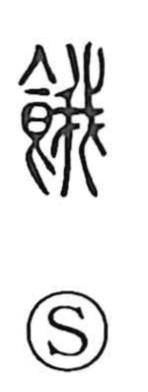

餓

Uncategorized
Kun: ueru | On: ga
to starve ・ hunger ・ hungry
Explanation
A phono-semantic character: the food element signals the realm of eating, while 我 serves as the phonetic, giving the on reading ga. In its earliest form, 我 depicted a saw with a notched blade, a jagged outline that also calls to mind the protruding ribs of an emaciated body. Combined with the food sign, the character comes to mean starving for want of food.